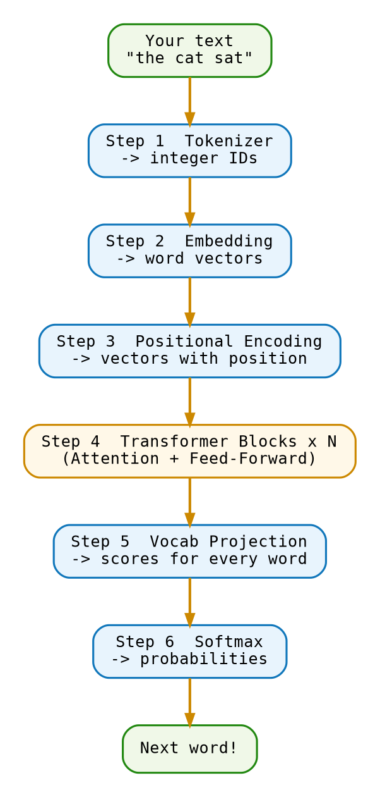

1 Introduction
This chapter answers two questions before you touch any math or code: what is GPT, and how does it work? We keep the language concrete and the diagrams simple. The details come later.
1.1 What Is GPT?
GPT stands for Generative Pre-trained Transformer.
Generative — it produces new text, one token at a time, rather than classifying or retrieving.
Pre-trained — before you ever use it, the model was trained on a vast corpus of text from the internet, books, and code. It learned the statistical patterns of language from billions of examples.
Transformer — the underlying neural network architecture. The transformer replaced recurrent networks in 2017 and became the backbone of every large language model since.
A GPT model is a function:
\[ P(\text{next token} \mid \text{context tokens}) = f_\theta(\text{context}) \]
Given a sequence of tokens (integers representing text), it outputs a probability distribution over the vocabulary — every possible next token gets a score. The model then samples from this distribution to generate the next word. Repeat, and you get fluent text.
What is a token? A token is the smallest unit of text the model processes. It is not always a whole word — “unbelievable” might be two tokens: “unbel” and “ievable”. Chapter 3 explains exactly how text is split into tokens.
1.2 How GPT Works
Imagine texting with a really smart friend who has read every book, article, and website ever written. You send a message, they think for a split second, and they reply with exactly the right words. GPT works like that friend, except instead of a brain, it uses a chain of math operations called a pipeline.
Every word GPT produces goes through these seven steps, in order:

Step 1 — Tokenization (Chapter 3). Before GPT can think about your text, it has to chop it into small pieces called tokens. Think of tokens like LEGO bricks: you break a sentence apart, and GPT works with the individual bricks. The phrase "the cat" might become three bricks with serial numbers like [1, 428, 3797].
Step 2 — Embedding (Chapter 4). A number like 428 is just an ID — it has no meaning by itself. So GPT looks each ID up in a giant table and swaps it for a list of hundreds of numbers called a vector. Picture a map where every word has its own location. Similar words end up close together: “cat” and “kitten” are neighbors, while “cat” and “spaceship” are far apart.
Step 3 — Positional Encoding (Chapter 5). Here is a puzzle: does “dog bites man” mean the same thing as “man bites dog”? Obviously not — but if GPT only sees individual words and ignores their order, it cannot tell the difference. Positional encoding adds a tiny “position tag” to each word’s vector so GPT knows which word came first, second, and so on.
Step 4 — Transformer Blocks (Chapter 6 through Chapter 10). This is where the real thinking happens. GPT passes the vectors through a stack of identical layers called transformer blocks. Inside each block, two things happen back-to-back:
- Attention — every word looks at every other word and asks “which of you matters most to me right now?” For example, the word “it” in “I kicked the ball and it bounced” needs to figure out that “it” refers to “ball”.
- Feed-forward — each word’s vector gets processed through a small math circuit that stores facts from training.
There can be dozens of these blocks stacked on top of each other. Each layer builds a slightly deeper understanding of the text.
Step 5 — Vocab Projection (Chapter 11). After passing through all the blocks, GPT has a rich, updated vector for the last word in your prompt. Now it needs to turn that into a real prediction: “what word should come next?” It does this by scoring every word in its vocabulary — all 50,000-plus of them. These raw scores are called logits.
Step 6 — Softmax (Chapter 11). Raw scores are hard to work with, so GPT converts them into proper probabilities that add up to 100%. The highest-probability word is the model’s best guess. It samples from the top options to avoid always giving the same robotic answer.
Step 7 — Loss and Training (Chapter 12 and Chapter 13). GPT did not start out smart. During training, it read billions of sentences and kept trying to predict the next word — getting it wrong most of the time at first. Each mistake triggered a feedback signal called backpropagation that nudged millions of internal numbers a tiny bit in the right direction. After trillions of these small nudges, the model got very good at the guessing game.
That’s GPT from start to finish. The rest of this book builds each step from scratch — in math, in Python code, and in step-by-step diagrams.
1.3 A Brief History of GPT
GPT did not appear out of nowhere. It is the result of more than sixty years of research: a long chain of ideas, failures, and breakthroughs. Here is the story, told simply.
1950s–1980s — The Birth of Machine Learning
Early computers followed strict rules written by programmers. If you wanted a computer to recognise a cat, you had to describe a cat in code: “four legs, pointy ears, fur…” That worked for simple things but fell apart for anything complicated.
Researchers started asking a different question: what if the computer could learn the rules itself by looking at lots of examples? That idea became machine learning. Instead of coding rules by hand, you feed the machine thousands of cat photos, label them “cat”, and let it figure out the pattern.
1943–1986 — Neural Networks
Inspired by the human brain, researchers built neural networks — programs made of many simple math nodes connected together, loosely like neurons. Each node takes some numbers in, does a small calculation, and passes the result on.
In 1986, a key paper by Geoffrey Hinton and others showed how to train these networks using an algorithm called backpropagation. Think of it like a teacher who marks your test, finds every mistake, and tells you exactly how much to adjust each answer. This was huge — but computers at the time were too slow for it to become widely useful yet.
2012 — The Deep Learning Explosion
Fast-forward to 2012. A neural network called AlexNet entered an image-recognition contest and demolished the competition. It won by a margin so wide that the whole field changed overnight. The secret ingredient was deep learning — stacking many layers of neurons on top of each other — combined with powerful graphics cards (GPUs) that could run the math fast enough.
Suddenly every company poured money into neural networks.
2013 — Word Vectors (Word2Vec)
A team at Google figured out how to teach a neural network to read text. They trained it to predict which words tend to appear near each other. The surprising result: the network assigned each word a list of numbers (a vector), and similar words ended up with similar numbers. You could even do word arithmetic: “king” − “man” + “woman” ≈ “queen”. Language had become math.
2014–2015 — Sequence Models and Attention
To translate a sentence — say, from English to French — models needed to process words in order. Researchers used networks called RNNs (Recurrent Neural Networks) and LSTMs for this. But they had a problem: long sentences broke them. By the time the model reached the end of a paragraph, it had mostly forgotten the beginning.
In 2015, researchers introduced attention. Instead of forcing the model to squeeze everything into one memory slot, attention let it look back at any earlier word at any time, like being allowed to flip back to any page of your notes during an exam. This made translation much better.
2017 — “Attention Is All You Need”
A team at Google published a paper with that bold title. They asked: what if we got rid of the old word-by-word processing entirely and used only attention? The result was the transformer — the architecture that GPT is built on. The transformer could look at all the words in a sentence at the same time, in parallel, which made it dramatically faster to train and better at long-range reasoning.
2018 — GPT-1 and BERT
Two important models appeared within months of each other.
OpenAI released GPT-1, which trained a transformer to do one simple task: read text and predict the next word. After seeing enough text, the model picked up grammar, facts, and reasoning as a side effect. It had 117 million parameters — the tunable numbers inside the network (imagine dials on a mixing board).
Google released BERT, which trained a transformer to predict missing words in the middle of a sentence instead of just the next one. BERT became the backbone of Google Search for years.
2019 — GPT-2
OpenAI scaled GPT-1 up to 1.5 billion parameters and fed it text scraped from the internet. The result was striking: GPT-2 could write paragraphs that sounded like a real person wrote them. OpenAI were nervous enough about misuse that they released it in stages rather than all at once.
2020 — GPT-3
Another scale jump: 175 billion parameters, trained on a huge chunk of the internet, books, and code. GPT-3 could write essays, answer questions, translate, summarise, and generate code — without being specifically trained for any of those things. It had just absorbed so much human writing that it learned to generalise. Developers started building products on top of it via an API, and a new industry was born.
2023 — LLaMA and the Open-Source Wave
Until now, the most powerful models were locked behind the walls of big companies. Meta changed that by releasing LLaMA — a family of models that could run on a single powerful laptop. Researchers and hobbyists could finally experiment with a state-of-the-art model without needing a data centre. Hundreds of variants appeared within weeks: Alpaca, Vicuna, Mistral, and many more. The open-source AI ecosystem exploded.
2022–2023 — ChatGPT and GPT-4
OpenAI added a training step called reinforcement learning from human feedback (RLHF). Human raters scored the model’s replies, and the model learned to be more helpful and less likely to say harmful things. The result was ChatGPT, released in November 2022 — the fastest app to reach 100 million users in history.
GPT-4 followed in 2023. It understood images as well as text, scored at or above human level on many standardised exams, and became the foundation for countless products and services.
Now — A Fast-Moving Field
Since then, new models have appeared every few months: Claude (Anthropic), Gemini (Google), Mistral, Qwen, DeepSeek, and many others. Each brings new ideas: longer context windows, better reasoning, cheaper inference, multilingual support.
The race is still on. But no matter how fancy the model, the fundamentals stay the same. Everything you learn in this book — tokens, embeddings, attention, transformer blocks, training — is the engine underneath all of them.